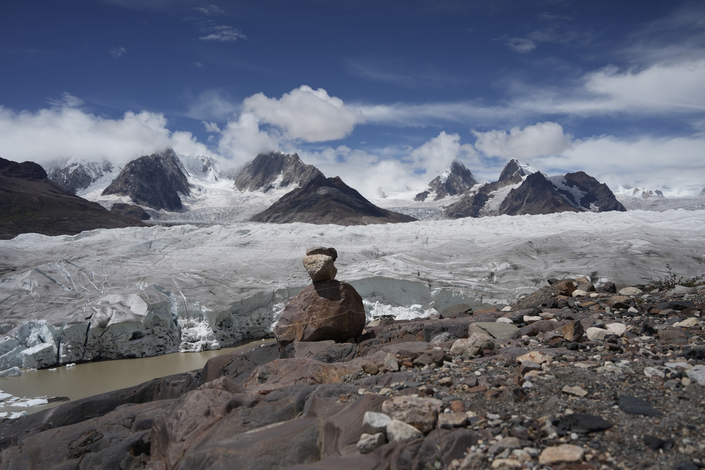
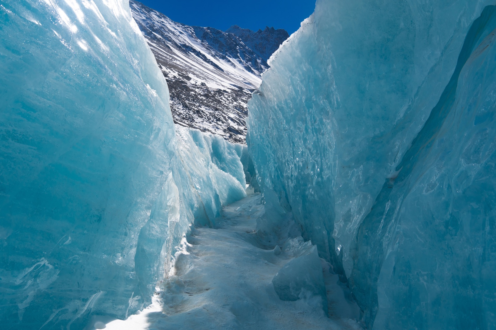
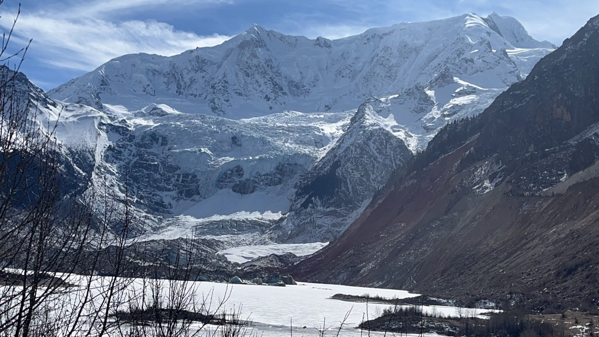

Yiming Wang
Hydrology, remote sensing, and global lake climate research
Beijing, China · wang-ym17@tsinghua.org.cn · CV · ResearchGate
Profile
I am a hydrology and remote-sensing researcher with a Ph.D. in Hydraulic Engineering from Tsinghua University. My research focuses on global lake hydrological and thermal dynamics, climate impacts on freshwater systems, compound hydro-climatic extremes, satellite data fusion, machine learning, and high-performance geospatial analysis.
My doctoral work reconstructs hydro-thermal changes for more than 1.4 million lakes and examines climate-driven low-water and high-temperature extremes. I am interested in interdisciplinary lake science that links physical dynamics with ecological and societal impacts, including lake thermal habitats, lake ice and phenology, reservoir storage, water-quality implications, and global climate change.
- Education
-
Ph.D., Hydraulic Engineering, Tsinghua University, 2021-2026. Advisor: Prof. Di Long.
B.Eng., Hydraulic Engineering, Tsinghua University, 2017-2021. Advisor: Prof. Di Long.
B.A., Economics, Tsinghua University, 2018-2021. - Methods
- Remote sensing, lake modeling, climate analysis, machine learning, geospatial computing
- Research Systems
- Global lakes, reservoirs, groundwater, lake ice, glaciers, and freshwater climate extremes
Field Photos



Selected Publications
* Corresponding author
- Wang, Y., Long, D.*, Li, X., Li, L., Scanlon, B. R., & Woolway, R. I. (2026). Global compression and reorganization of lake thermal habitats. Nature Geoscience (Under review).
- Li, L., Long, D.*, Wang, Y., & Woolway, R. I. (2025). Global dominance of seasonality in shaping lake-surface-extent dynamics. Nature, 642, 361-368. doi:10.1038/s41586-025-09046-3
- Wang, Y., Long, D.*, & Li, X. (2023). High-temporal-resolution monitoring of reservoir water storage of the Lancang-Mekong River. Remote Sensing of Environment, 292, 113575. doi:10.1016/j.rse.2023.113575
- Wang, Y., Li, C., Cui, Y., Cui, Y., Xu, Y., Hora, T., Zaveri, E., Rodella, A.-S., Bai, L., & Long, D.* (2024). Spatial downscaling of GRACE-derived groundwater storage changes across diverse climates and human interventions with Random Forests. Journal of Hydrology, 640, 131708. doi:10.1016/j.jhydrol.2024.131708
- Chen, Y., Wang, Y., Li, L., Cui, Y., Duan, X., & Long, D.* (2024). Monthly monitoring of inundated areas and water storage dynamics in China's large reservoirs using multisource remote sensing. Water Resources Research, 60, e2023WR036450. doi:10.1029/2023WR036450
- Xu, Y., Long, D.*, Li, X., Wang, Y., Zhao, F., & Cui, Y. (2024). Unveiling lake ice phenology in Central Asia under climate change with MODIS data and a two-step classification approach. Remote Sensing of Environment, 301, 113955. doi:10.1016/j.rse.2023.113955
- Zhao, F., Long, D.*, Fang, C., Wang, Y., & Duan, X. (2026). Satellite-observed surging dynamics of North Kunchhang Glacier I in the Eastern Karakoram. The Cryosphere, 20, 2143-2167. doi:10.5194/tc-20-2143-2026
- Dong, L., Long, D.*, Zhang, C., Cui, Y., Cui, Y., Wang, Y., Li, L., Hong, Z., Yao, L., Quan, J., Bai, L., Wang, H., & Scanlon, B. R. (2024). Shifting agricultural land use and its unintended water consumption in the North China Plain. Science Bulletin, 69, 3968-3977. doi:10.1016/j.scib.2024.11.009
- Hong, Z., Long, D.*, Li, X., Wang, Y., Zhang, J., Hamouda, M. A., & Mohamed, M. M. (2023). A global daily gap-filled chlorophyll-a dataset in open oceans during 2001-2021 from multisource information using convolutional neural networks. Earth System Science Data, 15, 5281-5300. doi:10.5194/essd-15-5281-2023